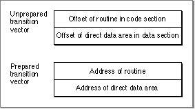

Legacy Document
Important: The information in this document is obsolete and should not be used for new development.
Important: The information in this document is obsolete and should not be used for new development.


PowerPC Implementation
The PowerPC implementation of the indirect addressing model is fairly straightforward. The PowerPC runtime environment uses general-purpose register GPR2 as the base register. Note that the use of this register to access the direct data area is a convention, not a requirement. Debuggers and other analytical applications should not assume that GPR2 is the base register.
To access imported data or indirect global data, the build-time offset of the global data item is added to the value in GPR2. The result is the address of a pointer that points to the desired data.
- Note
- Historically (from IBM documentation) the set of pointers to a fragment's indirectly accessed data was referred to as the Table of Contents and its base register was called the Table of Contents Register (RTOC).

To access imported routines, the offset of the routine is added to the value in GPR2, as in the data version, but the result points not directly to the routine, but to a transition vector.
The PowerPC transition vector typically contains two elements. The first must be the address of the routine being called. By convention the second element contains the address of the called fragment's direct data area.
Prior to preparation, the transition vector contains
During preparation, the Code Fragment Manager adds the code and data section start addresses to the offset values, generating absolute addresses for the routine and the location of the direct data area. Figure 2-4 shows the unprepared and prepared versions of the transition vector.
- the offset of the routine being called from the beginning of the code section
- the offset of the direct data area from the beginning of its data section
Figure 2-4 Unprepared and prepared PowerPC transition vectors

In order for indirect calls to work properly, certain requirements must be met on the part of the calling routine and the called routine. These requirements are as follows:
- Note
- The transition vector may contain any number of 4-byte fields. Currently only the first two are used. During an indirect call, GPR12 is assumed to point to the transition vector itself; this convention allows the called routine to access any additional fields in the transition vector beyond the first two.
How these requirements are implemented is determined by convention. For example, in the PowerPC runtime environment, glue code in the calling routine handles loading the proper values into GPR2 and GPR12. Any other actions are also determined by convention.
- For each routine call, the compiler generates a PC-relative branch followed by an instruction to restore GPR2.
- When entering the called routine, GPR12 points to the transition vector and GPR2 contains the second word of the transition vector.
- When returning to the calling routine, the old GPR2 value resides on the stack at
20(SP)(in the linkage area).
Subtopics
- Glue Code for Named Indirect Calls
- Glue Code for Pointer-Based Calls